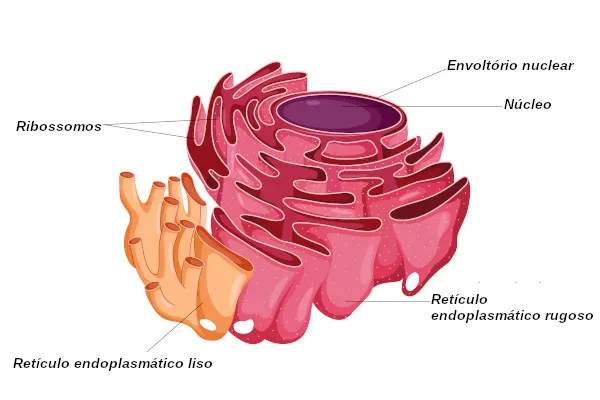

O retículo endoplasmático (RE) é uma rede de membranas que se estende pelo citoplasma, funcionando como um sistema de transporte interno. Ele é dividido em duas partes: o retículo endoplasmático rugoso (RER), que possui ribossomos em sua superfície e está envolvido na síntese de proteínas; e o retículo endoplasmático liso (REL), que não tem ribossomos e está relacionado à síntese de lipídios e ao metabolismo de carboidratos.

Além de suas funções de síntese e transporte, o RE também participa do armazenamento de cálcio e na desintoxicação celular. Ele é crucial para a produção de biomoléculas e para a manutenção da homeostase celular, garantindo que a célula funcione de forma eficiente.